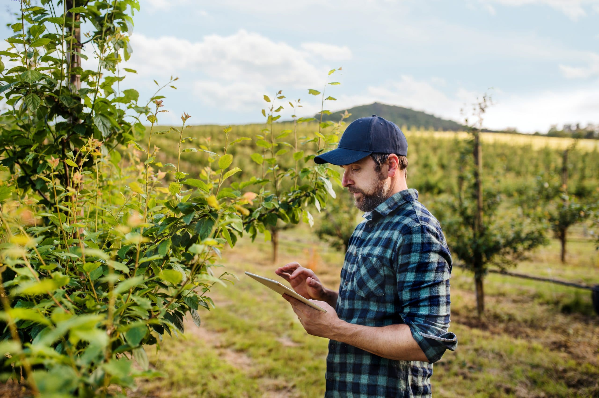
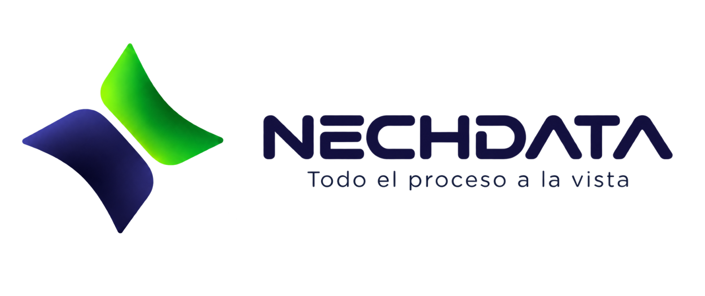
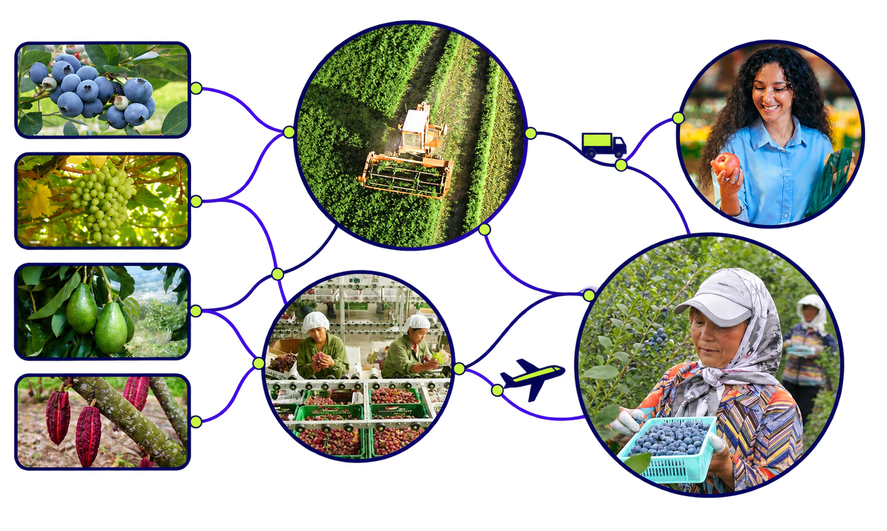
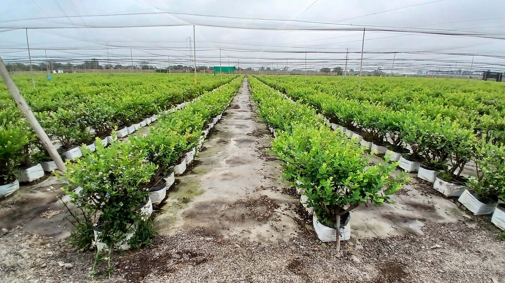
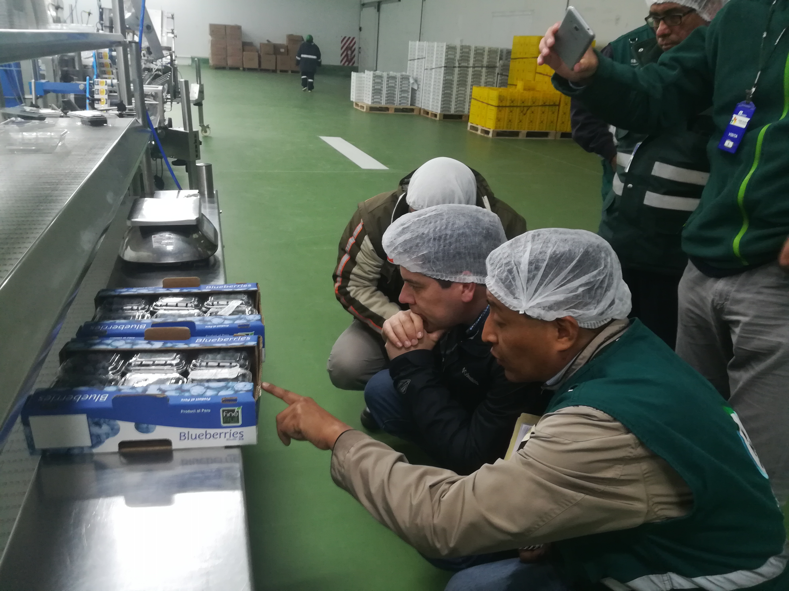
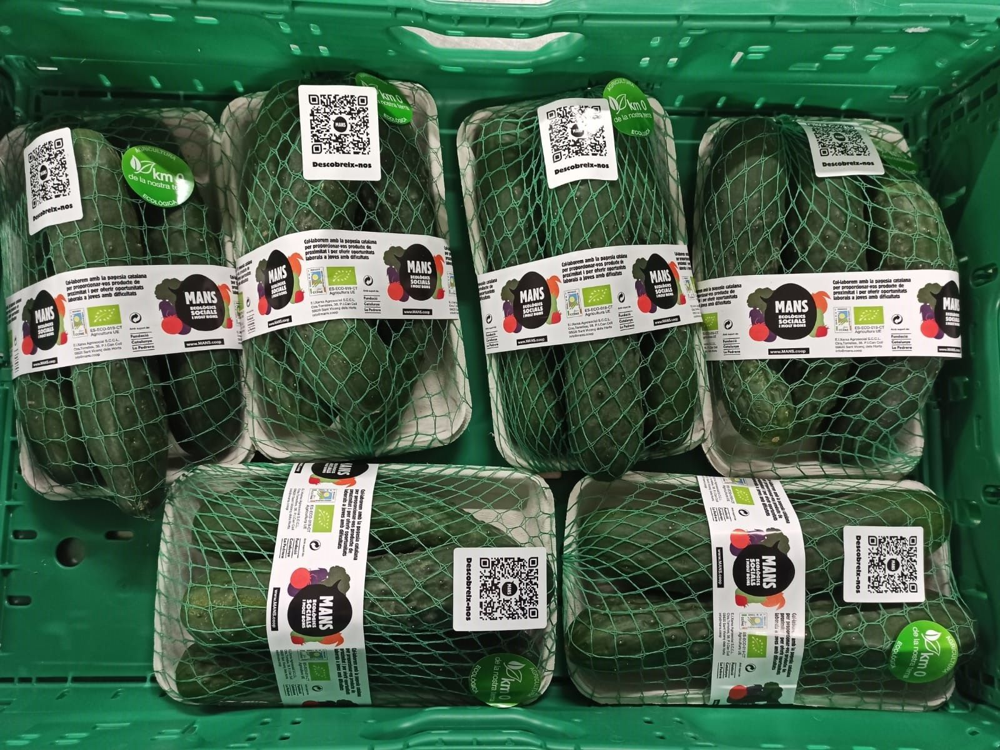
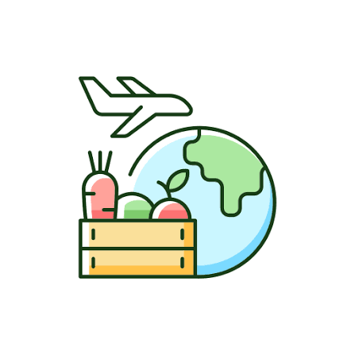

1. Identifica y registra
La información se relaciona con un lote: productor, procedencia, variedad y registros de las etapas que acompañan a la fruta.

Cada lote tiene un origen, características y un recorrido. NECHDATA reúne esa información y la transforma en una historia digital que pueda consultarse y comprenderse.
Conectamos datos del origen, la calidad, el packing y el destino para acercar la información de la fruta a quienes participan en su recorrido.

La misma historia conecta a quienes producen, exportan y disfrutan la fruta.

CampoLa trazabilidad permite relacionar un producto con su origen y con los registros de las etapas por las que ha pasado. En NECHDATA, el lote es el punto de conexión.

La información se relaciona con un lote: productor, procedencia, variedad y registros de las etapas que acompañan a la fruta.

Los datos de origen, calidad, packing y recorrido se reúnen dentro de una misma estructura para facilitar su consulta.

Al acercar un celular compatible a la etiqueta NFC, puedes abrir el enlace de la ficha pública del lote. Allí encontrarás imágenes, información seleccionada y explicaciones sencillas, sin instalar una aplicación adicional.
Partimos de una pregunta: ¿cómo podemos organizar la información que acompaña a un lote y hacer que resulte útil para quienes participan en su recorrido?
Explora nuestras colecciones en Google Photos.
Descubre lo que hay detrás de tus arándanos.
¿Tienes una pregunta, idea o sugerencia? Nos encantaría conocer tu experiencia y conversar contigo.

Conoce cómo presentamos el origen, la calidad, el packing y el recorrido de unos arándanos.